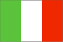
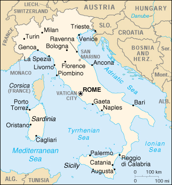

{kind=link}


| Italy |  |
|
|  | |
| Introduction |
Background: Italy became a nation-state belatedly - in 1861 when the city-states of the peninsula and Sicily were united under King Victor EMMANUEL. The Fascist dictatorship of Benito MUSSOLINI that took over after World War I led to a disastrous alliance with Nazi Germany and Italian defeat in World War II. Revival followed. Italy was a charter member of NATO and the European Economic Community (EEC) and joined the growing political and economic unification of Western Europe, including the introduction of the euro in 1999. Persistent problems include illegal immigration, the ravages of organized crime, corruption, high unemployment, and the low incomes and technical standards of southern Italy compared with the more prosperous north.
| Geography |
Location: Southern Europe, a peninsula extending into the central Mediterranean Sea, northeast of Tunisia
Geographic coordinates: 42 50 N, 12 50 E
Map references: Europe
Area:
total:
301,230 sq km
land:
294,020 sq km
water:
7,210 sq km
note:
includes Sardinia and Sicily
Area - comparative: slightly larger than Arizona
Land boundaries:
total:
1,932.2 km
border countries:
Austria 430 km, France 488 km, Holy See (Vatican City) 3.2 km, San Marino 39 km, Slovenia 232 km, Switzerland 740 km
Coastline: 7,600 km
Maritime claims:
continental shelf:
200-m depth or to the depth of exploitation
territorial sea:
12 nm
Climate: predominantly Mediterranean; Alpine in far north; hot, dry in south
Terrain: mostly rugged and mountainous; some plains, coastal lowlands
Elevation extremes:
lowest point:
Mediterranean Sea 0 m
highest point:
Mont Blanc (Monte Bianco) 4,807 m
Natural resources: mercury, potash, marble, sulfur, dwindling natural gas and crude oil reserves, fish, coal, arable land
Land use:
arable land:
31%
permanent crops:
10%
permanent pastures:
15%
forests and woodland:
23%
other:
21% (1993 est.)
Irrigated land: 27,100 sq km (1993 est.)
Natural hazards: regional risks include landslides, mudflows, avalanches, earthquakes, volcanic eruptions, flooding; land subsidence in Venice
Environment - current issues: air pollution from industrial emissions such as sulfur dioxide; coastal and inland rivers polluted from industrial and agricultural effluents; acid rain damaging lakes; inadequate industrial waste treatment and disposal facilities
Environment - international agreements:
party to:
Air Pollution, Air Pollution-Nitrogen Oxides, Air Pollution-Sulphur 85, Air Pollution-Sulphur 94, Air Pollution-Volatile Organic Compounds, Antarctic-Environmental Protocol, Antarctic Treaty, Biodiversity, Climate Change, Desertification, Endangered Species, Environmental Modification, Hazardous Wastes, Law of the Sea, Marine Dumping, Nuclear Test Ban, Ozone Layer Protection, Ship Pollution, Tropical Timber 83, Tropical Timber 94, Wetlands, Whaling
signed, but not ratified:
Air Pollution-Persistent Organic Pollutants, Climate Change-Kyoto Protocol
Geography - note: strategic location dominating central Mediterranean as well as southern sea and air approaches to Western Europe
| People |
Population: 57,634,327 (July 2000 est.)
Age structure:
0-14 years:
14% (male 4,220,973; female 3,977,962)
15-64 years:
68% (male 19,413,219; female 19,596,668)
65 years and over:
18% (male 4,297,962; female 6,127,543) (2000 est.)
Population growth rate: 0.09% (2000 est.)
Birth rate: 9.13 births/1,000 population (2000 est.)
Death rate: 9.99 deaths/1,000 population (2000 est.)
Net migration rate: 1.74 migrant(s)/1,000 population (2000 est.)
Sex ratio:
at birth:
1.06 male(s)/female
under 15 years:
1.06 male(s)/female
15-64 years:
0.99 male(s)/female
65 years and over:
0.7 male(s)/female
total population:
0.94 male(s)/female (2000 est.)
Infant mortality rate: 5.92 deaths/1,000 live births (2000 est.)
Life expectancy at birth:
total population:
79.03 years
male:
75.85 years
female:
82.41 years (2000 est.)
Total fertility rate: 1.18 children born/woman (2000 est.)
Nationality:
noun:
Italian(s)
adjective:
Italian
Ethnic groups: Italian (includes small clusters of German-, French-, and Slovene-Italians in the north and Albanian-Italians and Greek-Italians in the south)
Religions: predominately Roman Catholic with mature Protestant and Jewish communities and a growing Muslim immigrant community
Languages: Italian (official), German (parts of Trentino-Alto Adige region are predominantly German speaking), French (small French-speaking minority in Valle d'Aosta region), Slovene (Slovene-speaking minority in the Trieste-Gorizia area)
Literacy:
definition:
age 15 and over can read and write
total population:
98% (1998)
male:
NA%
female:
NA%
| Government |
Country name:
conventional long form:
Italian Republic
conventional short form:
Italy
local long form:
Repubblica Italiana
local short form:
Italia
former:
Kingdom of Italy
Data code: IT
Government type: republic
Capital: Rome
Administrative divisions: 20 regions (regioni, singular - regione); Abruzzi, Basilicata, Calabria, Campania, Emilia-Romagna, Friuli-Venezia Giulia, Lazio, Liguria, Lombardia, Marche, Molise, Piemonte, Puglia, Sardegna, Sicilia, Toscana, Trentino-Alto Adige, Umbria, Valle d'Aosta, Veneto
Independence: 17 March 1861 (Kingdom of Italy proclaimed; Italy was not finally unified until 1870)
National holiday: Anniversary of the Republic, 2 June (1946)
Constitution: 1 January 1948
Legal system: based on civil law system; appeals treated as new trials; judicial review under certain conditions in Constitutional Court; has not accepted compulsory ICJ jurisdiction
Suffrage: 18 years of age; universal (except in senatorial elections, where minimum age is 25)
Executive branch:
chief of state:
President Carlo Azeglio CIAMPI (since 13 May 1999)
head of government:
Prime Minister (referred to in Italy as the president of the Council of Ministers) Massimo D'ALEMA (since 21 October 1998)
cabinet:
Council of Ministers nominated by the prime minister and approved by the president
elections:
president elected by an electoral college consisting of both houses of Parliament and 58 regional representatives for a seven-year term; election last held 13 May 1999 (next to be held NA May 2006); prime minister appointed by the president and confirmed by parliament
election results:
Carlo Azeglio CIAMPI elected president; percent of electoral college vote - 70%
Legislative branch:
bicameral Parliament or Parlamento consists of the Senate or Senato della Repubblica (315 seats elected by popular vote of which 232 are directly elected and 83 are elected by regional proportional representation plus, in addition, there are a small number of senators-for-life including former presidents of the republic; members serve five-year terms) and the Chamber of Deputies or Camera dei Deputati (630 seats; 475 are directly elected, 155 by regional proportional representation; members serve five-year terms)
elections:
Senate - last held 21 April 1996 (next scheduled for NA April 2001); Chamber of Deputies - last held 21 April 1996 (next scheduled for NA April 2001)
election results:
Senate - percent of vote by party - NA; seats by party - Olive Tree 157, Freedom Alliance 116, Northern League-Padania 27, Communist Renewal 10, regional lists 3, Social Movement-Tricolored Flames 1, Panella Reformers 1; Chamber of Deputies - percent of vote by party - NA; seats by party - Olive Tree 284, Freedom Alliance 246, Northern League 59, Communist Renewal 35, Southern Tyrol People's Party 3, Autonomous List 2, other 1
Judicial branch: Constitutional Court or Corte Costituzionale, composed of 15 judges (one-third appointed by the president, one-third elected by Parliament, one-third elected by the ordinary and administrative supreme courts)
Political parties and leaders: Bonino List or LB (used to be the Autonomous List, a group of minor parties) [Emma BONINO]; Center-Left Coalition (used to be the Olive Tree) [Massimo D'ALEMA] - Democrats, DS, FdV, PdCI, PPI, RI, UDEUR; Christian Democratic Center or CCD [Pier Ferdinando CASINI]; Christian Democratic Union or CDU [Rocco BUTTIGLIONE]; Communist Renewal or RC [Fausto BERTINOTTI]; Democratic Party [Arturo PARISI]; Democratic Party of the Left or DS [Walter VELTRONI]; Forza Italia or FI [Silvio BERLUSCONI]; Freedom Alliance (a center-right coalition) [leader Silvio BERLUSCONI] - FI, AN, CCD; Green Federation or FdV [Grazia FRANCESCATO]; Italian Communist Party or PdCI [Armando COSSUTA]; Italian Democratic Socialists or SDI [Enrico BOSSELLI]; Italian Popular Party or PPI [Pierluigi CASTAGNETTI]; Italian Renewal or RI [Lamberto DINI]; Italian Social Movement-Tricolored Flame or MSI-FT [Pino RAUTI]; National Alliance or AN [Gianfranco FINI]; Northern League-Padania or NL-Padania [Umberto BOSSI]; Radical Party (formerly Panella Reformers) [Marco PANELLA]; Republican Party or PR [Giorgio LA MALFA]; Southern Tyrols People's Party or SVP (German speakers) [Siegfried BRUGGER]; Union of Democrats for Europe or UDEUR [Clemente MASTELLA]; Union for the Republic or UPR [Francesco COSSIGA]
Political pressure groups and leaders: Italian manufacturers and merchants associations (Confindustria, Confcommercio); organized farm groups (Confcoltivatori, Confagricoltura); Roman Catholic Church; three major trade union confederations (Confederazione Generale Italiana del Lavoro or CGIL [Sergio COFFERATI] which is left wing, Confederazione Italiana dei Sindacati Lavoratori or CISL [Sergio D'ANTONI] which is Catholic centrist, and Unione Italiana del Lavoro or UIL [Pietro LARIZZA] which is lay centrist)
International organization participation: AfDB, AsDB, Australia Group, BIS, BSEC (observer), CCC, CDB (non-regional), CE, CEI, CERN, EAPC, EBRD, ECE, ECLAC, EIB, EMU, ESA, EU, FAO, G- 7, G-10, IADB, IAEA, IBRD, ICAO, ICC, ICFTU, ICRM, IDA, IEA, IFAD, IFC, IFRCS, IHO, ILO, IMF, IMO, Inmarsat, Intelsat, Interpol, IOC, IOM, ISO, ITU, LAIA (observer), MINURSO, MONUC, NAM (guest), NATO, NEA, NSG, OAS (observer), OECD, OPCW, OSCE, PCA, UN, UNCTAD, UNESCO, UNHCR, UNIDO, UNIFIL, UNIKOM, UNITAR, UNMIBH, UNMIK, UNMOGIP, UNTSO, UPU, WCL, WEU, WHO, WIPO, WMO, WToO, WTrO, ZC
Diplomatic representation in the US:
chief of mission:
Ambassador Ferdinando SALLEO
chancery:
1601 Fuller Street NW, Washington, DC 20009 and 2700 16th Street NW, Washington, DC 20009
telephone:
[1] (202) 328-5500
FAX:
[1] (202) 483-2187
consulate(s) general:
Boston, Chicago, Houston, Miami, New York, Los Angeles, Philadelphia, and San Francisco
consulate(s):
Detroit
Diplomatic representation from the US:
chief of mission:
Ambassador Thomas M. FOGLIETTA
embassy:
Via Veneto 119/A, 00187-Rome
mailing address:
PSC 59, Box 100, APO AE 09624
telephone:
[39] (06) 46741
FAX:
[39] (06) 488-2672
consulate(s) general:
Florence, Milan, Naples
Flag description:
three equal vertical bands of green (hoist side), white, and red; similar to the flag of Ireland, which is longer and is green (hoist side), white, and orange; also similar to the flag of the Cote d'Ivoire, which has the colors reversed - orange (hoist side), white, and green
note:
inspired by the French flag brought to Italy by Napoleon in 1797
| Economy |
Economy - overview: Italy has a diversified industrial economy with approximately the same total and per capita output as France and the UK. This capitalistic economy remains divided into a developed industrial north, dominated by private companies, and a less developed agricultural south, with more than 20% unemployment. Most raw materials needed by industry and more than 75% of energy requirements are imported. For several years Italy has adopted budgets compliant with the requirements of the European Monetary Union (EMU); representatives of government, labor, and employers also agreed to an update of the 1993 "social pact," which has been widely credited with having brought Italy's inflation into conformity with EMU requirements. Italy must work to stimulate employment, promote wage flexibility, hold down the growth in pensions, and tackle the informal economy. Growth was 1.3% in 1999 and should edge up to 2.6% in 2000, led by investment and exports.
GDP: purchasing power parity - $1.212 trillion (1999 est.)
GDP - real growth rate: 1.3% (1999 est.)
GDP - per capita: purchasing power parity - $21,400 (1999 est.)
GDP - composition by sector:
agriculture:
2.6%
industry:
31.6%
services:
65.8% (1998)
Population below poverty line: NA%
Household income or consumption by percentage share:
lowest 10%:
2.9%
highest 10%:
23.7% (1991)
Inflation rate (consumer prices): 1.7% (1999 est.)
Labor force: 23.193 million
Labor force - by occupation: services 61%, industry 32%, agriculture 7% (1996)
Unemployment rate: 11.5% (1999 est.)
Budget:
revenues:
$530 billion
expenditures:
$522 billion, including capital expenditures of $NA (1999 est.)
Industries: tourism, machinery, iron and steel, chemicals, food processing, textiles, motor vehicles, clothing, footwear, ceramics
Industrial production growth rate: 1.9% (1998 est.)
Electricity - production: 243.027 billion kWh (1998)
Electricity - production by source:
fossil fuel:
80.22%
hydro:
17.3%
nuclear:
0%
other:
2.48% (1998)
Electricity - consumption: 266.705 billion kWh (1998)
Electricity - exports: 900 million kWh (1998)
Electricity - imports: 41.59 billion kWh (1998)
Agriculture - products: fruits, vegetables, grapes, potatoes, sugar beets, soybeans, grain, olives; beef, dairy products; fish
Exports: $242.6 billion (f.o.b., 1998)
Exports - commodities: engineering products, textiles and clothing, production machinery, motor vehicles, transport equipment, chemicals; food, beverages and tobacco; minerals and nonferrous metals
Exports - partners: EU 56% (Germany 16.5%, France 12.7%, UK 7.2%, Spain 5.8%, Netherlands 2.9%), US 8.5% (1998)
Imports: $206.9 billion (f.o.b., 1998)
Imports - commodities: engineering products, chemicals, transport equipment, energy products, minerals and nonferrous metals, textiles and clothing; food, beverages and tobacco
Imports - partners: EU 61% (Germany 18.8%, France 13.12%, UK 6.47%, Netherlands 6.2%, Belgium-Luxembourg 4.7%), US 5.1% (1998)
Debt - external: $45 billion (1996 est.)
Economic aid - donor: ODA, $1.3 billion (1997)
Currency: 1 Italian lira (Lit) = 100 centesimi
Exchange rates:
euros per US$1 - 0.9867 (January 2000), 0.9386 (1999); Italian lire (Lit) per US$1 - 1,688.7 (January 1999), 1,736.2 (1998), 1,703.1 (1997), 1,542.9 (1996), 1,628.9 (1995)
note:
on 1 January 1999, the EU introduced a common currency that is now being used for non-cash transactions in some member countries at a fixed rate of 1,936.27 lire per euro; the euro will replace the local currency in consenting countries for all transactions in 2002
Fiscal year: calendar year
| Communications |
Telephones - main lines in use: 25 million (1998)
Telephones - mobile cellular: 17.7 million (1998)
Telephone system:
modern, well-developed, fast; fully automated telephone, telex, and data services
domestic:
high-capacity cable and microwave radio relay trunks
international:
satellite earth stations - 3 Intelsat (with a total of 5 antennas - 3 for Atlantic Ocean and 2 for Indian Ocean), 1 Inmarsat (Atlantic Ocean region), and NA Eutelsat; 21 submarine cables
Radio broadcast stations: AM about 100, FM about 4,600, shortwave 9 (1998)
Radios: 50.5 million (1997)
Television broadcast stations: 6,317 (of which only 117 have 2 kW or more of transmitter power) (1997)
Televisions: 30.3 million (1997)
Internet Service Providers (ISPs): 219 (1999)
| Transportation |
Railways:
total:
19,394 km
standard gauge:
18,071 km 1.435-m gauge; Italian Railways (FS) operates 16,014 km of the total standard gauge routes (11,322 km electrified)
narrow gauge:
112 km 1.000-m gauge (112 km electrified); 1,211 km 0.950-m gauge (153 km electrified) (1998)
Highways:
total:
654,676 km
paved:
654,676 km (including 6,957 km of expressways)
unpaved:
0 km (1998 est.)
Waterways: 2,400 km for various types of commercial traffic, although of limited overall value
Pipelines: crude oil 1,703 km; petroleum products 2,148 km; natural gas 19,400 km
Ports and harbors: Augusta (Sicily), Bagnoli, Bari, Brindisi, Gela, Genoa, La Spezia, Livorno, Milazzo, Naples, Porto Foxi, Porto Torres (Sardigna), Salerno, Savona, Taranto, Trieste, Venice
Merchant marine:
total:
427 ships (1,000 GRT or over) totaling 6,971,578 GRT/9,635,770 DWT
ships by type:
bulk 41, cargo 45, chemical tanker 73, combination ore/oil 2, container 20, liquified gas 38, livestock carrier 1, multi-functional large load carrier 1, passenger 6, petroleum tanker 87, roll-on/roll-off 58, short-sea passenger 26, specialized tanker 13, vehicle carrier 16 (1999 est.)
Airports: 136 (1999 est.)
Airports - with paved runways:
total:
97
over 3,047 m:
5
2,438 to 3,047 m:
33
1,524 to 2,437 m:
16
914 to 1,523 m:
31
under 914 m:
12 (1999 est.)
Airports - with unpaved runways:
total:
39
1,524 to 2,437 m:
2
914 to 1,523 m:
19
under 914 m:
18 (1999 est.)
Heliports: 3 (1999 est.)
| Military |
Military branches: Army, Navy, Air Force, Carabinieri
Military manpower - military age: 18 years of age
Military manpower - availability:
males age 15-49:
14,315,634 (2000 est.)
Military manpower - fit for military service:
males age 15-49:
12,331,306 (2000 est.)
Military manpower - reaching military age annually:
males:
311,160 (2000 est.)
Military expenditures - dollar figure: $23.294 billion (FY99)
Military expenditures - percent of GDP: 1.7% (FY99)
| Transnational Issues |
Disputes - international: Italy and Slovenia made progress in resolving bilateral issues; Croatia and Italy made progress toward resolving a bilateral issue dating from World War II over property and ethnic minority rights
Illicit drugs: important gateway for and consumer of Latin American cocaine and Southwest Asian heroin entering the European market